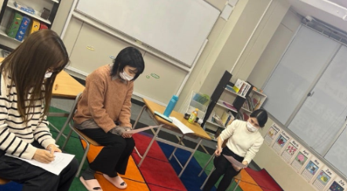
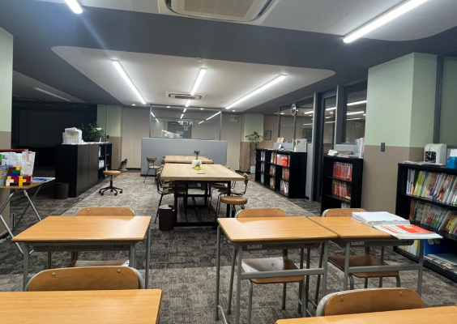

合格から逆算した「最短ルート」を、
現役合格者の知恵と共に歩む。
（写真：実際に合格を勝ち取った先輩が直接指導する環境）
大阪公立大学専門 桜灯塾は大阪公立大学合格のため、全科目を指導し、合格者の常識を叩き込む個別カリキュラムを構築。
大阪公立大学専門 桜灯塾の最大の強みは、指導経験豊富なプロ講師と、大阪公立大学に「実際に合格した現役生」がタッグを組むことです。特に情報の少ない推薦入試において、実際にその入試を突破した医学部生講師が「自分の時はどう答えたか」「面接官はどこを見ていたか」を直接生徒に伝授します。プロが学習の方向性を管理し、合格した先輩が具体的な戦術を教える。この最強の布陣が曖昧な受験対策を、大阪公立大学合格の実現のために勉強スケジュールを個別具体化し、「確実な勝利」へと導きます。
共通テストと二次テストの配点バランスを緻密に考慮した、戦略的得点計画を策定。高1からの積み上げを重視し、区切りごとの指標を示しながら、高得点を獲得するための本質的な学力を養成します。
大阪公立大学医学部の推薦入試に合格した現役医学部生が、自身の経験をフル活用して指導します。提出書類の添削から面接、集団討論まで、「合格者が当時何に気をつけたか」という最高密度の情報を生徒に直接還元します。
合格のため、全科目をマネジメント
合格から逆算した戦略的なスケジュール
高校生活はたった3年。高1・高2の段階で何を完成させるべきか、高3春の指標を明確に提示します。ゴールから逆算した「迷わない計画」をプロが策定し、日々の勉強を確実な一歩に変えます。

大阪公立大学医学部生の合格の基準を伝授
大阪公立大医学部生は、共通テストや2次試験でトップ層の点数を獲得した「受験のプロ」です。他学部と同じ問題を解き、満点近くをもぎ取った彼らの「高得点の取り方」を直接生徒に還元します。

年中無休の通いたい放題
月額59,800円～で自習室・授業ともに通いたい放題。毎日通っても追加費用はありません。Zoomオンライン自習にも対応し、自宅でも集中できる環境を整えています。
※日曜日はオプション対応となります。
大阪公立大学専門 桜灯塾が大阪公立大学に強い理由は、情報の「質」と「量」にあります。在職する30名以上の学生講師はいずれも大阪公立大学医学部医学科の現役学生。さらに、2023年度の推薦入試合格者15名中11名や、以前の合格者からも直接ヒアリングを重ね、外部には出回らないリアルな情報を蓄積し続けています。経験値と最新情報。この両輪があるからこそ、他塾には真似できない指導が可能です。
合格者への徹底したヒアリングにより、
募集要項だけでは見えない「試験の現場」の情報を網羅。
公立大医学部に実際に通う現役生が担任。
最新の出題傾向や大学生活のリアルを直接伝えます。
難関の推薦入試を勝ち抜いた本人が講師。
合格ラインを知るからこそできる、本物の対策です。